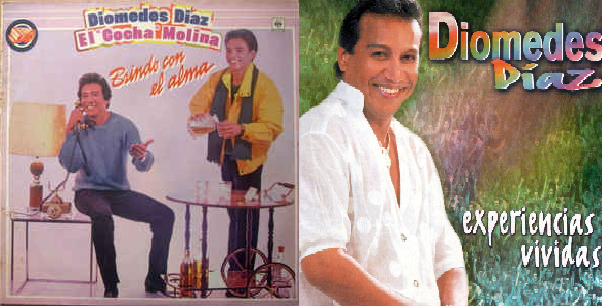
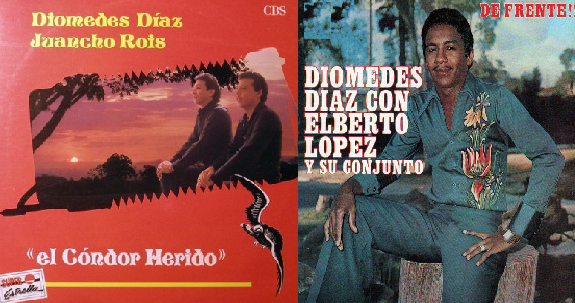

¿Qué hizo?
- Titulo de Amor (1993) - El álbum Título de amor fue
grabado en la voz de Diomedes Díaz y el acordeón de Juancho Rois. Fue
publicado el 25 de mayo de 1993.Mi canción favorita de este ábum es "Tú eres la reina"
- De parranda vol.2 (2004) - El álbum De parranda vol. 2
fue grabado en la voz de Diomedes Díaz y varios acordeoneros en vivo.
Mi canción favorita de este álbum es "Amarte mas no pude"
- Brindo con el alma (1986) - El álbum Brindo con el alma
fue grabado en la voz de Diomedes Díaz y el acordeón de Gonzalo Arturo
"El Cocha" Molina. Fue publicado el 27 de mayo de 1986.
Mi canción favorita de este álbum es "Sin medir distancias"
- Experiencias vividas (1999) - El álbum Experiencias vividas
fue grabado en la voz de Diomedes Díaz y el acordeón de Franco Argüelles.
Fue publicado el 3 de diciembre de 1999. La canción que más me gusta de este
álbum es "Ilusiones"

- El cóndor herido (1989) - El álbum El cóndor herido fue
grabado en la voz de Diomedes Díaz y el acordeón de Juancho Rois. Fue
publicado el 25 de mayo de 1989. La cancón que más me gusta de este álbum es
"El cóndor herido" como el mismo nombre del álbum.
- De frente (1977) - La producción musical De frente fue
grabada en la voz de Diomedes Díaz y el acordeón de Elberto
“El Debe” López. Fue publicado el 13 de junio de 1977.
La canción que más me gusta de este álbum es "Me deja el avión"

HomeEsto es un espacio invisible grande.
¿Qué hizo?Esto es un espacio invisible grande.
Links